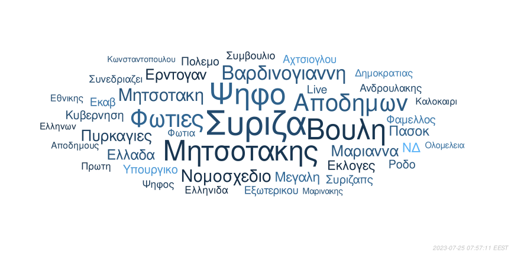

-....----..-.-...----....--.-....-
..-.-.-.--.....-.-.-..-...--.....-
-..--.---.--.-.-.---.-.-.--..--..-
-.-.-...---.-..---..---......-..--
-.-..----.--.---.--.-...-..--.....
.--.-----.......---.....-.-.-.-...
-.....-......-..--..----------.--.
-.--...-.----.-.-.---.---.-.--..-.
-.-.--...-.---....-.--....-.-....-
-.--...----.-..-..-..-.-..--.---..
..-.--.-----....--.....-------.-.-
--..--.-.--...--.-.....-.----.-.-.
--.---.--.---.----.--.---...-....-
-...--.--------.------.-.--.-...-.
.-.-.-----...........--..-.-.-.-.-
---------...--.-...-....--.--.-.--
-...-.-.---.-.--...-----..-..--...
.-..--.--.--..----.-...--.-..-..-.
--.--..-..-.-..--.-...-...-...-.-.
-.--..-.--..-.-....-....-.--......


| Θέση | Ιστότοπος | Αριθμός άρθρων |
|---|---|---|
| 1 | Πενταπόσταγμα | 158 |
| 2 | iefimerida | 154 |
| 3 | Newsit | 153 |
| 4 | Zougla | 144 |
| 5 | in.gr | 136 |
| 6 | Παραπολιτικά | 129 |
| 7 | Capital | 115 |
| 8 | Καθημερινή | 115 |
| 9 | CNN | 107 |
| 10 | Makeleio | 107 |
| 11 | newsbeast | 106 |
| 12 | News247 | 75 |
| 13 | Lifo | 73 |
| 14 | TheToc | 73 |
| 15 | AlfaVita | 71 |
| 16 | Δικαιολογητικά | 71 |
| 17 | Το Ποντίκι | 67 |
| 18 | ΕφΣυν | 60 |
| 19 | Αυγή | 59 |
| 20 | TVXS | 58 |
| 21 | Left.gr | 53 |
| 22 | DocumentoNews | 46 |
| 23 | The Press Project | 17 |
| 24 | Πριν | 5 |
| 25 | Viewtag | 1 |
| Θέση | Ιστότοπος | Μέσος όρος λέξεων ανά άρθρο |
|---|---|---|
| 1 | Πριν | 548.6 |
| 2 | AlfaVita | 548.4 |
| 3 | Viewtag | 548.0 |
| 4 | ΕφΣυν | 536.2 |
| 5 | Left.gr | 459.4 |
| 6 | Αυγή | 449.3 |
| 7 | in.gr | 413.3 |
| 8 | Καθημερινή | 409.4 |
| 9 | TVXS | 407.1 |
| 10 | News247 | 370.4 |
| 11 | Capital | 367.6 |
| 12 | The Press Project | 351.4 |
| 13 | Δικαιολογητικά | 346.9 |
| 14 | TheToc | 341.7 |
| 15 | CNN | 323.1 |
| 16 | Πενταπόσταγμα | 320.5 |
| 17 | iefimerida | 310.7 |
| 18 | Παραπολιτικά | 269.9 |
| 19 | Το Ποντίκι | 269.0 |
| 20 | Zougla | 267.2 |
| 21 | Newsit | 262.8 |
| 22 | newsbeast | 258.7 |
| 23 | Makeleio | 245.9 |
| 24 | DocumentoNews | 233.7 |
| 25 | Lifo | 4.8 |
| Θέση | Ιστότοπος | Σύνολο λέξεων |
|---|---|---|
| 1 | in.gr | 56206 |
| 2 | Πενταπόσταγμα | 50635 |
| 3 | iefimerida | 47843 |
| 4 | Καθημερινή | 47082 |
| 5 | Capital | 42274 |
| 6 | Newsit | 40209 |
| 7 | AlfaVita | 38937 |
| 8 | Zougla | 38474 |
| 9 | Παραπολιτικά | 34816 |
| 10 | CNN | 34569 |
| 11 | ΕφΣυν | 32171 |
| 12 | News247 | 27778 |
| 13 | newsbeast | 27424 |
| 14 | Αυγή | 26506 |
| 15 | Makeleio | 26311 |
| 16 | TheToc | 24944 |
| 17 | Δικαιολογητικά | 24627 |
| 18 | Left.gr | 24347 |
| 19 | TVXS | 23613 |
| 20 | Το Ποντίκι | 18025 |
| 21 | DocumentoNews | 10751 |
| 22 | The Press Project | 5973 |
| 23 | Πριν | 2743 |
| 24 | Viewtag | 548 |
| 25 | Lifo | 351 |
| Θέση | Ιστότοπος | Δείκτης απλότητας κειμένου |
|---|---|---|
| 1 | Lifo | 144.6 |
| 2 | Makeleio | 78.8 |
| 3 | Viewtag | 78.7 |
| 4 | in.gr | 77.2 |
| 5 | newsbeast | 76.8 |
| 6 | AlfaVita | 76.5 |
| 7 | Δικαιολογητικά | 75.0 |
| 8 | Αυγή | 74.3 |
| 9 | News247 | 74.2 |
| 10 | Το Ποντίκι | 74.1 |
| 11 | Zougla | 73.8 |
| 12 | TheToc | 73.4 |
| 13 | iefimerida | 73.3 |
| 14 | Καθημερινή | 73.3 |
| 15 | Newsit | 72.7 |
| 16 | TVXS | 72.3 |
| 17 | Πενταπόσταγμα | 71.7 |
| 18 | ΕφΣυν | 71.6 |
| 19 | DocumentoNews | 71.2 |
| 20 | Παραπολιτικά | 70.5 |
| 21 | Πριν | 68.2 |
| 22 | The Press Project | 66.7 |
| 23 | CNN | 66.4 |
| 24 | Left.gr | 65.2 |
| 25 | Capital | 63.6 |

Το 1984 (alpha version) είναι μια πειραματική και ερευνητική υπηρεσία προβολής της ροής των ειδήσεων από ελληνικές ιστοσελίδες ενημέρωσης.
1984: Ερευνητική Πειραματική Προβολή Ροής Ειδήσεων 
- Για ερωτήσεις και συμμετοχές:
e-mail: [σελίδα 6, παράγραφος 2 λέξη 7]@1984.gr